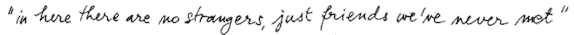

Don't Give Up
We choose this project because of the mission and values of Sister Of The Road. People, as individuals, are profoundly and primarily motivated by LOVE, and we believe that all people deserve to keep their dignity intact. We want to honor that by providing resources accessible to everyone without a home.
About Sisters of the Road
Sisters of the Road exists to build authentic relationships and alleviate the hunger of isolation in an atmosphere of nonviolence and gentle personalism that nourishes the whole individual, while seeking systemic solutions that reach the roots of homelessness and poverty to end them forever. Visit our website for more information.
